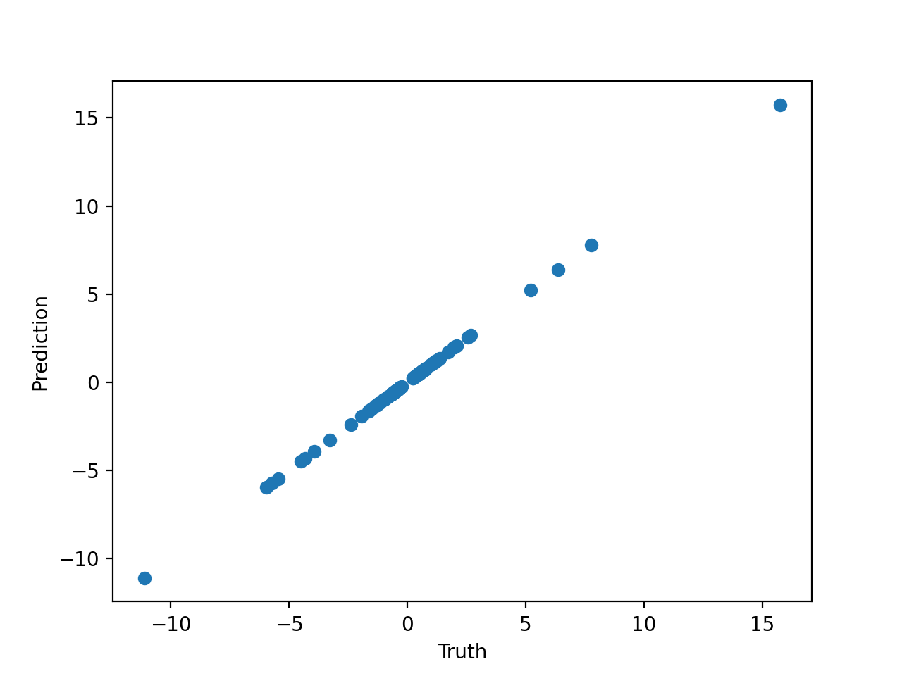

Toy Examples with Code¶
Preamble¶
1. Simple search¶
Here's a simple example where we
find the expression 2 cos(x3) + x0^2 - 2.
X = 2 * np.random.randn(100, 5)
y = 2 * np.cos(X[:, 3]) + X[:, 0] ** 2 - 2
model = PySRRegressor(binary_operators=["+", "-", "*", "/"])
model.fit(X, y)
print(model)
2. Custom operator¶
Here, we define a custom operator and use it to find an expression:
X = 2 * np.random.randn(100, 5)
y = 1 / X[:, 0]
model = PySRRegressor(
binary_operators=["+", "*"],
unary_operators=["inv(x) = 1/x"],
extra_sympy_mappings={"inv": lambda x: 1/x},
)
model.fit(X, y)
print(model)
3. Multiple outputs¶
Here, we do the same thing, but with multiple expressions at once, each requiring a different feature.
X = 2 * np.random.randn(100, 5)
y = 1 / X[:, [0, 1, 2]]
model = PySRRegressor(
binary_operators=["+", "*"],
unary_operators=["inv(x) = 1/x"],
extra_sympy_mappings={"inv": lambda x: 1/x},
)
model.fit(X, y)
4. Plotting an expression¶
For now, let's consider the expressions for output 0. We can see the LaTeX version of this with:
or output 1 with model.latex()[1].
Let's plot the prediction against the truth:
from matplotlib import pyplot as plt
plt.scatter(y[:, 0], model.predict(X)[:, 0])
plt.xlabel('Truth')
plt.ylabel('Prediction')
plt.show()
Which gives us:

We may also plot the output of a particular expression
by passing the index of the expression to predict (or
sympy or latex as well)
5. Feature selection¶
PySR and evolution-based symbolic regression in general performs very poorly when the number of features is large. Even, say, 10 features might be too much for a typical equation search.
If you are dealing with high-dimensional data with a particular type of structure, you might consider using deep learning to break the problem into smaller "chunks" which can then be solved by PySR, as explained in the paper 2006.11287.
For tabular datasets, this is a bit trickier. Luckily, PySR has a built-in feature
selection mechanism. Simply declare the parameter select_k_features=5, for selecting
the most important 5 features.
Here is an example. Let's say we have 30 input features and 300 data points, but only 2 of those features are actually used:
Let's create a model with the feature selection argument set up:
model = PySRRegressor(
binary_operators=["+", "-", "*", "/"],
unary_operators=["exp"],
select_k_features=5,
)
Now let's fit this:
Before the Julia backend is launched, you can see the string:
which indicates that the feature selection (powered by a gradient-boosting tree) has successfully selected the relevant two features.
This fit should find the solution quickly, whereas with the huge number of features, it would have struggled.
This simple preprocessing step is enough to simplify our tabular dataset, but again, for more structured datasets, you should try the deep learning approach mentioned above.
6. Denoising¶
Many datasets, especially in the observational sciences, contain intrinsic noise. PySR is noise robust itself, as it is simply optimizing a loss function, but there are still some additional steps you can take to reduce the effect of noise.
One thing you could do, which we won't detail here, is to create a custom log-likelihood
given some assumed noise model. By passing weights to the fit function, and
defining a custom loss function such as elementwise_loss="myloss(x, y, w) = w * (x - y)^2",
you can define any sort of log-likelihood you wish. (However, note that it must be bounded at zero)
However, the simplest thing to do is preprocessing, just like for feature selection. To do this,
set the parameter denoise=True. This will fit a Gaussian process (containing a white noise kernel)
to the input dataset, and predict new targets (which are assumed to be denoised) from that Gaussian process.
For example:
X = np.random.randn(100, 5)
noise = np.random.randn(100) * 0.1
y = np.exp(X[:, 0]) + X[:, 1] + X[:, 2] + noise
Let's create and fit a model with the denoising argument set up:
model = PySRRegressor(
binary_operators=["+", "-", "*", "/"],
unary_operators=["exp"],
denoise=True,
)
model.fit(X, y)
print(model)
If all goes well, you should find that it predicts the correct input equation, without the noise term!
7. Julia packages and types¶
PySR uses SymbolicRegression.jl as its search backend. This is a pure Julia package, and so can interface easily with any other Julia package. For some tasks, it may be necessary to load such a package.
For example, let's say we wish to discovery the following relationship:
where \(p_i\) is the \(i\)th prime number, and \(x\) is the input feature.
Let's see if we can discover this using the Primes.jl package.
First, let's get the Julia backend:
jl stores the Julia runtime.
Now, let's run some Julia code to add the Primes.jl package to the PySR environment:
This imports the Julia package manager, and uses it to install
Primes.jl. Now let's import Primes.jl:
Now, we define a custom operator:
jl.seval("""
function p(i::T) where T
if (0.5 < i < 1000)
return T(Primes.prime(round(Int, i)))
else
return T(NaN)
end
end
""")
We have created a a function p, which takes an arbitrary number as input.
p first checks whether the input is between 0.5 and 1000.
If out-of-bounds, it returns NaN.
If in-bounds, it rounds it to the nearest integer, compures the corresponding prime number, and then
converts it to the same type as input.
Next, let's generate a list of primes for our test dataset.
Since we are using juliacall, we can just call p directly to do this:
Next, let's use this list of primes to create a dataset of \(x, y\) pairs:
import numpy as np
X = np.random.randint(0, 100, 100)[:, None]
y = [primes[3*X[i, 0] + 1] - 5 + np.random.randn()*0.001 for i in range(100)]
Note that we have also added a tiny bit of noise to the dataset.
Finally, let's create a PySR model, and pass the custom operator. We also need to define the sympy equivalent, which we can leave as a placeholder for now:
from pysr import PySRRegressor
import sympy
class sympy_p(sympy.Function):
pass
model = PySRRegressor(
binary_operators=["+", "-", "*", "/"],
unary_operators=["p"],
niterations=100,
extra_sympy_mappings={"p": sympy_p}
)
We are all set to go! Let's see if we can find the true relation:
if all works out, you should be able to see the true relation (note that the constant offset might not be exactly 1, since it is allowed to round to the nearest integer). You can get the sympy version of the best equation with:
8. Complex numbers¶
PySR can also search for complex-valued expressions. Simply pass
data with a complex datatype (e.g., np.complex128),
and PySR will automatically search for complex-valued expressions:
import numpy as np
X = np.random.randn(100, 1) + 1j * np.random.randn(100, 1)
y = (1 + 2j) * np.cos(X[:, 0] * (0.5 - 0.2j))
model = PySRRegressor(
binary_operators=["+", "-", "*"], unary_operators=["cos"], niterations=100,
)
model.fit(X, y)
You can see that all of the learned constants are now complex numbers. We can get the sympy version of the best equation with:
We can also make predictions normally, by passing complex data:
to make predictions with the most accurate expression.
9. Custom objectives¶
You can also pass a custom objectives as a snippet of Julia code, which might include symbolic manipulations or custom functional forms. These do not even need to be differentiable! First, let's look at the default objective used (a simplified version, without weights and with mean square error), so that you can see how to write your own:
function default_objective(tree, dataset::Dataset{T,L}, options)::L where {T,L}
(prediction, completion) = eval_tree_array(tree, dataset.X, options)
if !completion
return L(Inf)
end
diffs = prediction .- dataset.y
return sum(diffs .^ 2) / length(diffs)
end
Here, the where {T,L} syntax defines the function for arbitrary types T and L.
If you have precision=32 (default) and pass in regular floating point data,
then both T and L will be equal to Float32. If you pass in complex data,
then T will be ComplexF32 and L will be Float32 (since we need to return
a real number from the loss function). But, you don't need to worry about this, just
make sure to return a scalar number of type L.
The tree argument is the current expression being evaluated. You can read
about the tree fields here.
For example, let's fix a symbolic form of an expression, as a rational function. i.e., \(P(X)/Q(X)\) for polynomials \(P\) and \(Q\).
objective = """
function my_custom_objective(tree, dataset::Dataset{T,L}, options) where {T,L}
# Require root node to be binary, so we can split it,
# otherwise return a large loss:
tree.degree != 2 && return L(Inf)
P = tree.l
Q = tree.r
# Evaluate numerator:
P_prediction, flag = eval_tree_array(P, dataset.X, options)
!flag && return L(Inf)
# Evaluate denominator:
Q_prediction, flag = eval_tree_array(Q, dataset.X, options)
!flag && return L(Inf)
# Impose functional form:
prediction = P_prediction ./ Q_prediction
diffs = prediction .- dataset.y
return sum(diffs .^ 2) / length(diffs)
end
"""
model = PySRRegressor(
niterations=100,
binary_operators=["*", "+", "-"],
loss_function=objective,
)
Warning: When using a custom objective like this that performs symbolic manipulations, many functionalities of PySR will not work, such as
.sympy(),.predict(), etc. This is because the SymPy parsing does not know about how you are manipulating the expression, so you will need to do this yourself.
Note how we did not pass / as a binary operator; it will just be implicit
in the functional form.
Let's generate an equation of the form \(\frac{x_0^2 x_1 - 2}{x_2^2 + 1}\):
Finally, let's fit:
Note that the printed equation is not the same as the evaluated equation, because the printing functionality does not know about the functional form.
We can get the string format with:
(or, you could use model.equations_.iloc[-1].equation)
For me, this equation was:
looking at the bracket structure of the equation, we can see that the outermost
bracket is split at the - operator (note that we ignore the root operator in
the evaluation, as we simply evaluated each argument and divided the result) into
((2.3554819 + -0.3554746) - (x1 * (x0 * x0))) and
(-1.0000019 - (x2 * x2)), meaning that our discovered equation is
equal to:
\(\frac{x_0^2 x_1 - 2.0000073}{x_2^2 + 1.0000019}\), which
is nearly the same as the true equation!
10. Dimensional constraints¶
One other feature we can exploit is dimensional analysis. Say that we know the physical units of each feature and output, and we want to find an expression that is dimensionally consistent.
We can do this as follows, using DynamicQuantities.jl to assign units,
passing a string specifying the units for each variable.
First, let's make some data on Newton's law of gravitation, using
astropy for units:
import numpy as np
from astropy import units as u, constants as const
M = (np.random.rand(100) + 0.1) * const.M_sun
m = 100 * (np.random.rand(100) + 0.1) * u.kg
r = (np.random.rand(100) + 0.1) * const.R_earth
G = const.G
F = G * M * m / r**2
We can see the units of F with F.unit.
Now, let's create our model. Since this data has such a large dynamic range, let's also create a custom loss function that looks at the error in log-space:
elementwise_loss = """function loss_fnc(prediction, target)
scatter_loss = abs(log((abs(prediction)+1e-20) / (abs(target)+1e-20)))
sign_loss = 10 * (sign(prediction) - sign(target))^2
return scatter_loss + sign_loss
end
"""
Now let's define our model:
model = PySRRegressor(
binary_operators=["+", "-", "*", "/"],
unary_operators=["square"],
elementwise_loss=elementwise_loss,
complexity_of_constants=2,
maxsize=25,
niterations=100,
populations=50,
# Amount to penalize dimensional violations:
dimensional_constraint_penalty=10**5,
)
and fit it, passing the unit information. To do this, we need to use the format of DynamicQuantities.jl.
# Get numerical arrays to fit:
X = pd.DataFrame(dict(
M=M.to("M_sun").value,
m=m.to("kg").value,
r=r.to("R_earth").value,
))
y = F.value
model.fit(
X,
y,
X_units=["Constants.M_sun", "kg", "Constants.R_earth"],
y_units="kg * m / s^2"
)
You can observe that all expressions with a loss under
our penalty are dimensionally consistent!
(The "[⋅]" indicates free units in a constant, which can cancel out other units in the expression.)
For example,
would indicate that the expression is dimensionally consistent, with
a constant "2.6353e-22[m s⁻²]".
Note that this expression has a large dynamic range so may be difficult to find. Consider searching with a larger niterations if needed.
Note that you can also search for exclusively dimensionless constants by settings
dimensionless_constants_only to true.
11. Expression Specifications¶
PySR 1.0 introduces powerful expression specifications that allow you to define structured equations. Here are two examples:
Template Expressions¶
TemplateExpressionSpec allows you to define a specific structure for the equation.
For example, let's say we want to learn an equation of the form:
We can do this as follows:
import numpy as np
from pysr import PySRRegressor, TemplateExpressionSpec
# Create data
X = np.random.randn(1000, 3)
y = np.sin(X[:, 0] + X[:, 1]) + X[:, 2]**2
# Define template: we want sin(f(x1, x2)) + g(x3)
template = TemplateExpressionSpec(
expressions=["f", "g"],
variable_names=["x1", "x2", "x3"],
combine="sin(f(x1, x2)) + g(x3)",
)
model = PySRRegressor(
expression_spec=template,
binary_operators=["+", "*", "-", "/"],
unary_operators=["sin"],
maxsize=10,
)
model.fit(X, y)
Parametric Expressions¶
When your data has categories with shared equation structure but different parameters,
you can use the parameters argument of TemplateExpressionSpec to specify learned category-specific parameters.
For example, let's say we want to learn an equation of the form:
where \(\alpha\) and \(\beta\) are different for each category.
Further, let's say we have 3 categories, with \(\alpha \in \{0.1, 1.5, -0.5\}\) and \(\beta \in \{1.0, 2.0, 0.5\}\).
import numpy as np
from pysr import PySRRegressor, TemplateExpressionSpec
# Create data with 2 features and 3 categories
X = np.random.uniform(-3, 3, (1000, 2))
category = np.random.randint(0, 3, 1000)
# Parameters for each category
offsets = [0.1, 1.5, -0.5]
scales = [1.0, 2.0, 0.5]
# y = scale[category] * sin(x1) + offset[category]
y = np.array([
scales[c] * np.sin(x1) + offsets[c]
for x1, c in zip(X[:, 0], category)
])
Now, let's define our parametric expression:
template = TemplateExpressionSpec(
expressions=["f"],
variable_names=["x1", "x2", "category"],
parameters={"p1": 3, "p2": 3}, # One parameter per category
combine="f(x1, x2, p1[category], p2[category])"
)
Next, we pass the category as a column in X
corresponding to the index we defined in variable_names.
Note that because Julia is 1-indexed, we need to add 1 to the category index.
Now, we can fit our model:
model = PySRRegressor(
expression_spec=template,
binary_operators=["+", "*", "-", "/"],
unary_operators=["sin"],
maxsize=10,
)
model.fit(X_with_category, y)
# Predicting on new data
# model.predict(X_test_with_category)
See Expression Specifications for more details.
You can use this approach for more complex cases, where you have multiple expressions in the template and parameters that vary by category.
12. Using TensorBoard for Logging¶
You can use TensorBoard to visualize the search progress, as well as
record hyperparameters and final metrics (like min_loss and pareto_volume - the latter of which
is a performance measure of the entire Pareto front).
import numpy as np
from pysr import PySRRegressor, TensorBoardLoggerSpec
rstate = np.random.RandomState(42)
# Uniform dist between -3 and 3:
X = rstate.uniform(-3, 3, (1000, 2))
y = np.exp(X[:, 0]) + X[:, 1]
# Create a logger that writes to "logs/run*":
logger_spec = TensorBoardLoggerSpec(
log_dir="logs/run",
log_interval=10, # Log every 10 iterations
)
model = PySRRegressor(
binary_operators=["+", "*", "-", "/"],
logger_spec=logger_spec,
)
model.fit(X, y)
You can then view the logs with:
13. Vector-valued expressions¶
You can use TemplateExpressionSpec to find expressions for vector-valued data,
where each component might share a common structure.
The trick is to put each vector element into your feature matrix X,
and then use a template expression to define the relationships.
For example, say we have 3-dimensional vectors where each component follows a pattern with a shared term. Say the true model is:
Let's set this up:
import numpy as np
from pysr import PySRRegressor, TemplateExpressionSpec
n = 200
rstate = np.random.RandomState(0)
x1 = rstate.uniform(-2, 2, n)
x2 = rstate.uniform(-2, 2, n)
x3 = rstate.uniform(-2, 2, n)
# True model with shared component exp(x1):
y1 = np.exp(x1) + x2**2
y2 = np.exp(x1) + np.sin(x3)
y3 = np.exp(x1) + x1 * x2
# Add some noise
y1 += 0.05 * rstate.randn(n)
y2 += 0.05 * rstate.randn(n)
y3 += 0.05 * rstate.randn(n)
Now, we put everything in X; BOTH features and targets:
Now, we can define our template expression:
spec = TemplateExpressionSpec(
expressions=["f1", "f2", "f3", "shared"],
variable_names=["x1", "x2", "x3", "y1", "y2", "y3"],
combine="""
v = shared(x1, x2, x3)
y1_predicted = v + f1(x1, x2, x3)
y2_predicted = v + f2(x1, x2, x3)
y3_predicted = v + f3(x1, x2, x3)
residuals = (
abs2(y1 - y1_predicted) +
abs2(y2 - y2_predicted) +
abs2(y3 - y3_predicted)
)
residuals
"""
)
Now, we can fit our model using this template. Since
we already computed the per-row squared error inside the template,
we can pass a dummy y to the fit method, and also define
an elementwise_loss that simply returns the residuals (which get
summed over the data):
model = PySRRegressor(
expression_spec=spec,
binary_operators=["+", "-", "*", "/"],
unary_operators=["exp", "sin"],
maxsize=20,
niterations=50,
elementwise_loss="(pred, target) -> pred",
)
dummy_y = np.zeros(n)
model.fit(X, dummy_y)
After running, PySR should find both the shared component (exp(x1)) as well as individual components (square(x2), sin(x3), and x1 * x2).
You can access the individual expressions through the Julia objects:
# Simply get the expression with the highest score:
idx = model.equations_.score.idxmax()
# Extract the Julia object:
julia_expr = model.equations_.loc[idx, 'julia_expression']
# Access individual subexpressions:
for name in ['f1', 'f2', 'f3', 'shared']:
tree = getattr(julia_expr.trees, name)
print(f"{name}: {tree}")
We can also evaluate individual expressions:
from pysr import jl
from pysr.julia_helpers import jl_array
SR = jl.SymbolicRegression
# Get individual trees
f1_tree = julia_expr.trees.f1
shared_tree = julia_expr.trees.shared
# Evaluate at specific points (x1=1, x2=2, x3=3)
test_inputs = jl_array(np.array([[1.0], [2.0], [3.0]]))
f1_result, _ = SR.eval_tree_array(f1_tree, test_inputs, model.julia_options_)
shared_result, _ = SR.eval_tree_array(shared_tree, test_inputs, model.julia_options_)
print(f"f1 at (1,2,3): {f1_result[0]}") # Should be ~4.0 for x2^2
print(f"shared at (1,2,3): {shared_result[0]}") # Should be ~2.718 for exp(1)
14. Using differential operators¶
As part of the TemplateExpressionSpec described above,
you can also use differential operators within the template.
The operator for this is D which takes an expression as the first argument,
and the argument index we are differentiating as the second argument.
This lets you compute integrals via evolution.
For example, let's say we wish to find the integral of \(\frac{1}{x^2 \sqrt{x^2 - 1}}\) in the range \(x > 1\). We can compute the derivative of a function \(f(x)\), and compare that to numerical samples of \(\frac{1}{x^2\sqrt{x^2-1}}\). Then, by extension, \(f(x)\) represents the indefinite integral of it with some constant offset!
import numpy as np
from pysr import PySRRegressor, TemplateExpressionSpec
x = np.random.uniform(1, 10, (1000,)) # Integrand sampling points
y = 1 / (x**2 * np.sqrt(x**2 - 1)) # Evaluation of the integrand
expression_spec = TemplateExpressionSpec(
expressions=["f"],
variable_names=["x"],
combine="df = D(f, 1); df(x)",
)
model = PySRRegressor(
binary_operators=["+", "-", "*", "/"],
unary_operators=["sqrt"],
expression_spec=expression_spec,
maxsize=20,
)
model.fit(x[:, np.newaxis], y)
If everything works, you should find something that simplifies to \(\frac{\sqrt{x^2 - 1}}{x}\).
Here, we write out a full function in Julia.
15. Additional features¶
For the many other features available in PySR, please read the Options section.